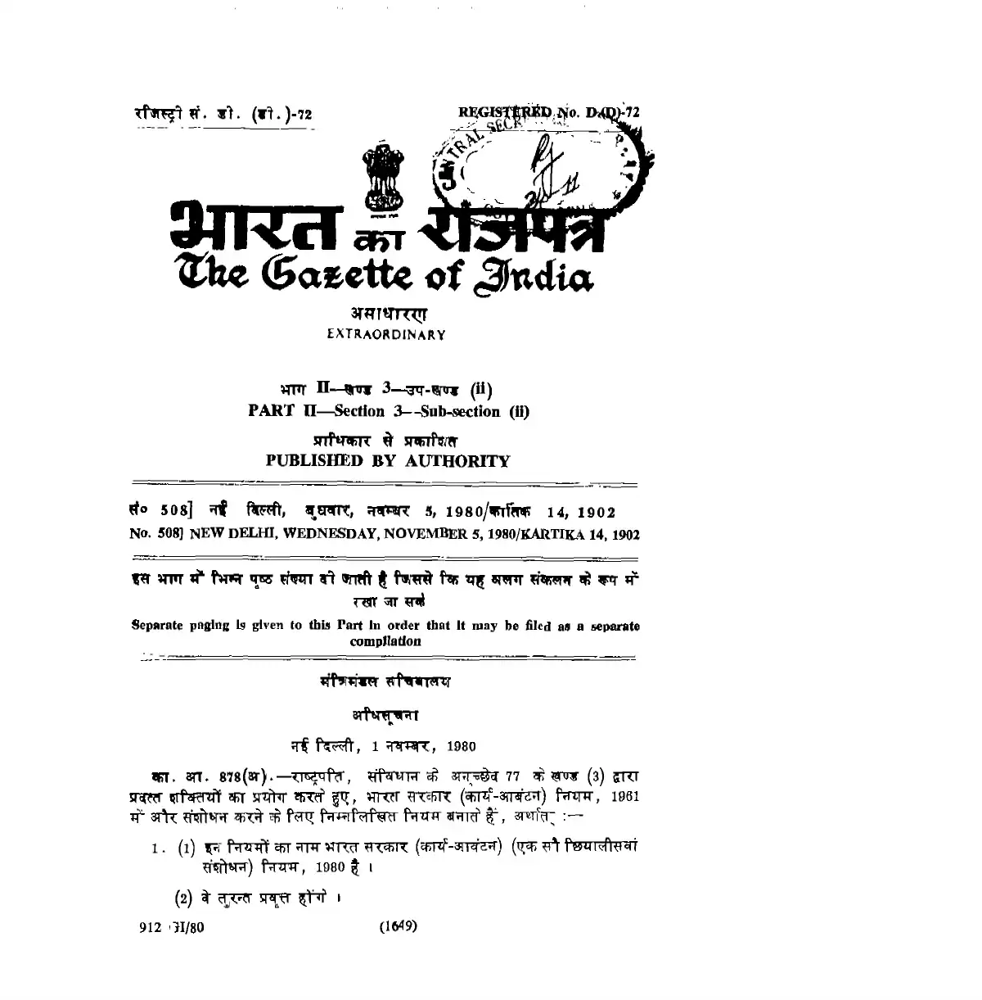
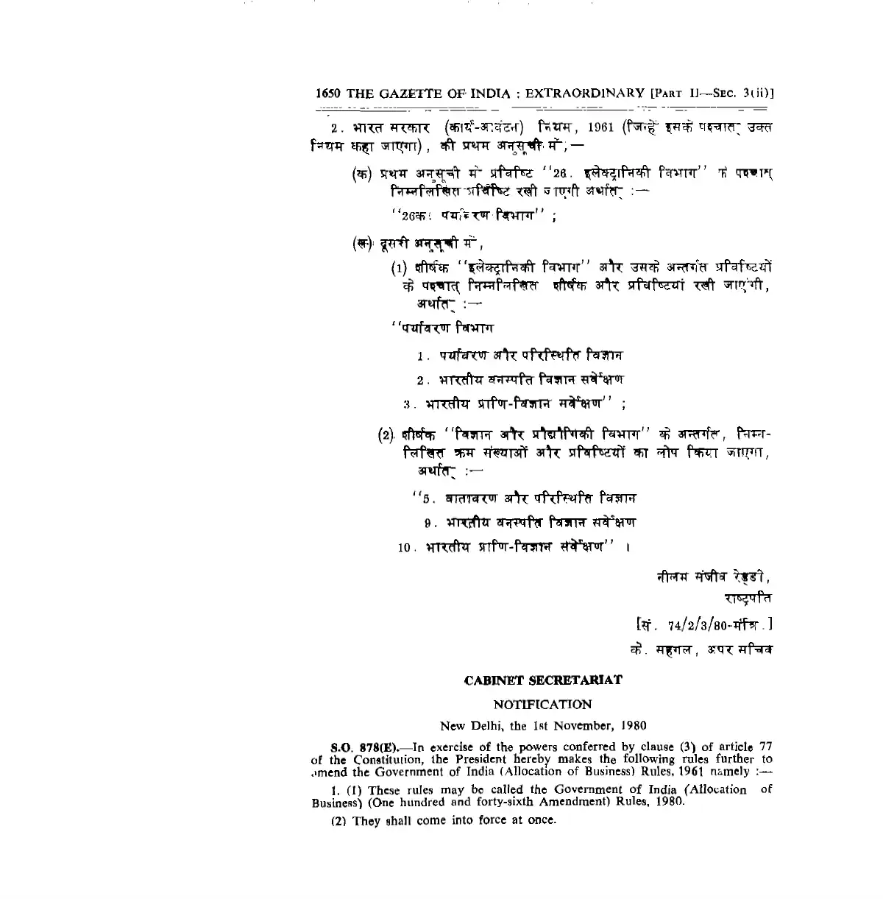
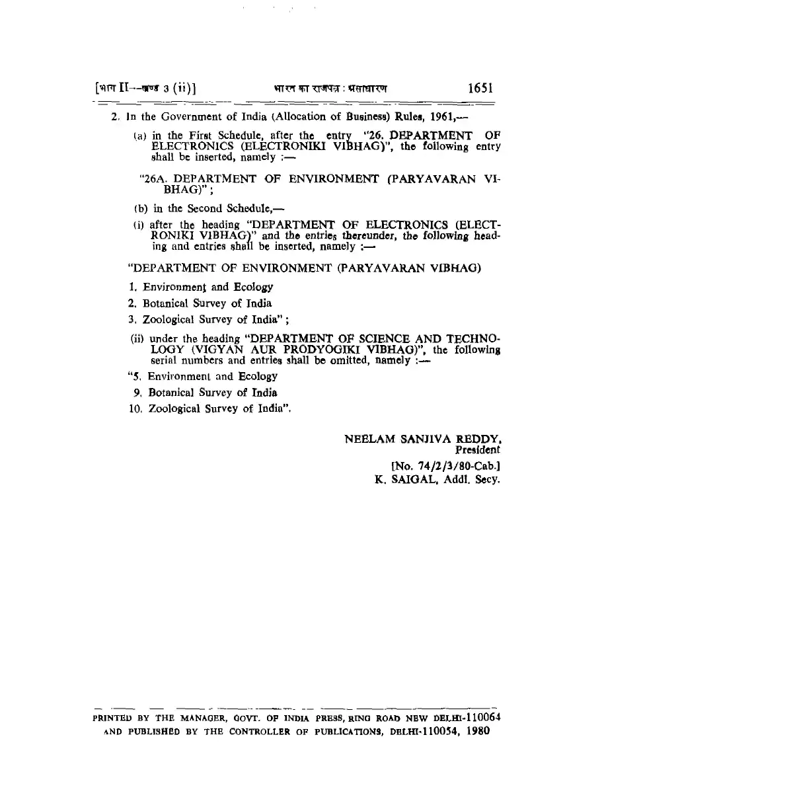

Amendment #146 (S.O. 878(E), 1980)
5 changes: 1 to the First Schedule, 4 to the Second Schedule. 5 applied
What it did to the ministries
- spun offA Department of Environment is carved out of Science and Technology. change 1, 2, 3, 4, 5 · histories: Science and Technology, Environment & Climate
The order, page by page
Page 1 of 4

Page 2 of 4

Page 3 of 4

12345after Schedule 1 › DEPARTMENT OF ELECTRONICS
- 26A. DEPARTMENT OF ENVIRONMENT (PARYAVARAN VI- BHAG)
applied at schedule 1 › department 26A in the Rules after #146
after Schedule 2 › DEPARTMENT OF ELECTRONICS
- DEPARTMENT OF ENVIRONMENT
- 1. Environment and Ecology
- 2. Botanical Survey of India
- 3. Zoological Survey of India
applied at schedule 2 › department DEPARTMENT OF ENVIRONMENT in the Rules after #146
Schedule 2 › DEPARTMENT OF SCIENCE AND TECHNO- LOGY › entry 5
applied at schedule 2 › department DEPARTMENT OF SCIENCE AND TECHNOLOGY › entry 5 in the Rules after #146
Schedule 2 › DEPARTMENT OF SCIENCE AND TECHNO- LOGY › entry 9
applied at schedule 2 › department DEPARTMENT OF SCIENCE AND TECHNOLOGY › entry 9 in the Rules after #146
Schedule 2 › DEPARTMENT OF SCIENCE AND TECHNO- LOGY › entry 10
applied at schedule 2 › department DEPARTMENT OF SCIENCE AND TECHNOLOGY › entry 10 in the Rules after #146
Page 4 of 4
How this document was read
From the Government of India (Allocation of Business) Rules, 1961 and their amendments, as published by the Cabinet Secretariat (cabsec.gov.in), read by orgpedia. The readings of the older scanned gazettes have known gaps.